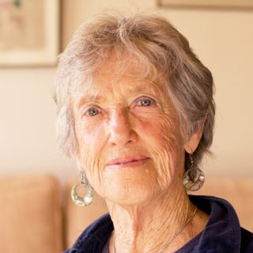
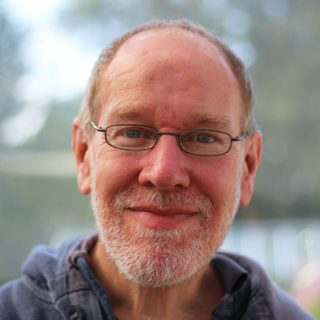

Sobre nosotros
Sostenemos la vida
Elara Social es la línea de trabajo comunitario de [en proceso de transformarnos en cooperativa] L’Espiral, centrada en reconstruir comunidad en un contexto que fragmenta y desgasta. Creamos lugares donde la gente pueda encontrarse, escucharse e impulsar cambios concretos que cuiden la vida en el territorio.
Cuando el malestar y la preocupación se viven en soledad, el vínculo social se debilita. Y sin vínculos ni espacios seguros, es difícil sostener procesos personales y colectivos: la conciencia se queda sola o se paraliza. Por eso facilitamos prácticas y encuentros que ayudan a arraigar, reconocer el malestar y abrir nuevas miradas, para que la comunidad pueda transformar la preocupación en esperanza activa y en gestos y acciones concretas.
En síntesis: existimos para fortalecer el tejido comunitario y la capacidad colectiva de cuidar la vida, transformando el aislamiento y el malestar en vínculo, apoyo mutuo y acción local con sentido.
Propósito
Nuestro proyecto existe porque necesitamos reconstruir comunidad en un contexto que fragmenta y desgasta, creando lugares donde la gente pueda encontrarse, escucharse e impulsar cambios concretos que cuiden la vida en el territorio.
Existimos para tejer comunidad y apoyo mutuo.
- Porque muchas personas viven el malestar y la preocupación en soledad, y eso desgasta el vínculo social.
- Porque sin vínculos ni espacios seguros es difícil sostener procesos personales y colectivos, y la conciencia se queda sola o se paraliza.
- Porque necesitamos prácticas y encuentros que ayuden a arraigar, reconocer el malestar y abrir nuevas miradas.
- Porque así la comunidad puede convertir la preocupación en esperanza activa y en gestos y acciones concretas orientadas a cuidar la vida y la responsabilidad compartida.
Existimos para fortalecer el tejido comunitario y la capacidad colectiva de cuidar la vida, transformando el aislamiento y el malestar en vínculo, apoyo mutuo y acción local con sentido.
-
Misión
Ofrecemos espacios e itinerarios de práctica y encuentro para personas que quieren reconectar y construir comunidad, mediante mini-rituales accesibles, recursos online, encuentros comunitarios, talleres vivenciales y espacios de acompañamiento individual que sostienen el proceso y lo traducen en acciones concretas en el territorio.
-
Visión
Queremos consolidar una red comunitaria que ponga la vida en el centro:
queremos que cada vez más personas participen en espacios de apoyo mutuo y transformen el malestar y el aislamiento en acciones locales concretas y sostenidas.
Para quién es (y qué encontrarás)
La propuesta es para personas, grupos, colectivos, organizaciones o cooperativas que viven malestar, soledad, cansancio o desorientación y que, más allá de herramientas puntuales, necesitan comunidad y sostén para no quedarse solas con lo que les pasa.
Beneficio clave: ofrecemos un camino para pasar del aislamiento o el desbordamiento al vínculo, a la claridad y a dar pasos concretos con sentido, de manera que el malestar no se queda solo en palabras o en preocupación, sino que se puede sostener y transformar en acciones realistas.
Lo que nos diferencia: no ofrecemos una experiencia aislada ni una propuesta “de un solo día”, sino un itinerario continuo con prácticas y espacios de encuentro (mini-rituales, recursos accesibles, talleres, encuentros y acompañamiento individual si hace falta), dentro de un marco cuidado de seguridad relacional y apoyo mutuo, orientado a hacer posible una participación progresiva y sostenida que arraigue en el territorio y ponga la vida en el centro.
Nuestros valores (qué hacemos y qué no hacemos)
-
1. Cuidado de la vida
HACEMOS: cuidamos límites y ritmos, priorizamos el bienestar de las personas y del territorio, y orientamos lo que hacemos a sostener la vida (emocional, relacional y comunitaria).
NO HACEMOS: normalizar la sobrecarga, poner el resultado por delante de la salud, ni exigir más de lo que se puede sostener.
-
2. Presencia y conciencia
HACEMOS: nos detenemos, escuchamos el cuerpo y el momento, hablamos conscientemente y cultivamos una mirada clara y responsable antes de actuar.
NO HACEMOS: funcionar con prisas, reaccionar desde el automatismo, ni imponer interpretaciones.
-
3. Apoyo mutuo e interdependencia
HACEMOS: cooperamos, acogemos, nos ayudamos a sostener procesos y hacemos posible que nadie atraviese solo/a aquello que se puede sostener en comunidad.
NO HACEMOS: individualizarlo todo, competir, ni desentendernos cuando alguien pide apoyo dentro del marco posible.
-
4. Acción concreta y responsabilidad compartida
HACEMOS: traducimos lo que vivimos en pasos pequeños, realistas y revisables, y compartimos responsabilidad para que el cambio sea posible y sostenido.
NO HACEMOS: quedarnos en ideales abstractos, prometer cosas que no se pueden sostener, ni desvincularnos de lo que decidimos como comunidad.
Quiénes somos
-
Aleix Boronat
Director y cofundador de L’Espiral. Facilitador de El Trabajo que Reconecta, formado en Psicología Humanista, Terapeuta Gestalt, Mentor y Profesor de Mindfulness. Formación en Psicoterapia Integrativa (programa SAT).
-
Anna Viñas
Cofundadora de L’Espiral. Terapeuta Gestalt. Miembro adherente de la AETG. Formación en Psicoterapia Integrativa (programa SAT). Formada en psicología y psicopatología del posparto. Formada en Yoga y Meditación para el Embarazo y el Posparto con Happy Yoga. Formada en Educación Viva. Licenciada en Humanidades y Periodismo.
-
Montse Molina
Psicopedagoga. Máster en Psicología Infanto-juvenil. Formada en Terapia Gestalt aplicada a la Infancia y la Adolescencia y en Terapia Sistémica Relacional. Terapeuta Gestalt y Terapeuta Corporal Integrativa. Especialista en Adicciones: Máster en Conductas Adictivas. Formada en Psicoterapia Integrativa: Programa SAT. Formadora en el ámbito de la educación humanista.
-
Elvira Abad
Psicóloga Sanitaria Col. 13460, Terapeuta Gestalt, Máster en Psicogerontología y Neurociencias Aplicadas. Coordinadora del Grupo de Trabajo de Personas Mayores en el COPC, Área de Intervención Social. Docente de Atención a la Dependencia SAD. Formada en Practitioner P.N.L., Risoterapia, Constelaciones Familiares, Acompañamiento a la Muerte y Movimiento Espontáneo SEITAI. En formación en Psicología Integrativa Transpersonal y Programa SAT Eneagrama de Claudio Naranjo.
-
Cecilia Cristaldi
Psicóloga formada en terapia sistémica, Gestalt y Coaching. Mi enfoque actual combina la psicología y el coaching, tanto en abordajes individuales como en grupo. Acompaño a mis pacientes para que puedan reconocer su potencial e ir hacia la búsqueda de sus objetivos.
Nuestra manera de acompañar
Somos el puente entre el malestar interno y la acción colectiva.
Las raíces del Trabajo que Reconecta
Esta propuesta nació a finales de los años 70 de la mano de Joanna Macy, como una respuesta valiente a la angustia que generaban las crisis ecológicas, sociales y nucleares de aquella época.
Más de 50 años después, esta metodología está más viva que nunca. Hoy no solo nos sostiene ante aquellos retos históricos, sino que se ha adaptado para acoger todo el abanico de incertidumbres y malestares que atraviesan nuestro presente.
Concebido desde el inicio como un proceso vivencial, el Trabajo que Reconecta sigue ofreciendo a personas y comunidades un espacio seguro donde mirar de frente el dolor por el mundo y metabolizarlo para convertirlo en fuerza de cambio. Con el tiempo, esta semilla se ha expandido a decenas de países, adaptándose a organizaciones sociales, educativas y comunitarias.
Hoy somos una red global de miles de personas unidas por un mismo propósito: fortalecer la resiliencia, recuperar el sentido y contribuir a regenerar la vida.
Nosotros conocimos este trabajo gracias a la colaboración que Joanna Macy y Chris Johnstone hicieron para dar a luz el libro “Esperanza Activa”, editado en castellano por Ediciones La Llave.
Les estamos profundamente agradecidos por su legado.
-

Joanna Macy
Joanna Macy fue filósofa, autora y activista reconocida internacionalmente por su trabajo en ecología profunda, budismo comprometido y transformación social.
Desde finales de los años 70 acompañó a miles de personas y comunidades creando espacios donde pudieran reconocer el dolor por el mundo y transformarlo en una fuerza para el cambio.
Su visión dio origen al Trabajo que Reconecta, convirtiéndolo en un proceso que une la sanación personal con la acción colectiva.
Joanna murió el 19 de julio de 2025, dejando un legado vivo que sigue inspirando a personas y comunidades de todo el mundo.
-

Chris Johnstone
Chris Johnstone es médico y especialista en resiliencia, psicología del bienestar y cambio positivo.
Su colaboración con Joanna Macy permitió actualizar y expandir este trabajo, incorporando herramientas para sostener el compromiso y el equilibrio emocional a largo plazo.
Juntos escribieron el libro “Esperanza Activa” (Active Hope), que ha inspirado a miles de personas a cultivar motivación y sentido incluso en tiempos difíciles.
Además, Chris ofrece un curso online en activehope.training, que permite profundizar en estas prácticas desde cualquier lugar del mundo.
Estas dos fuentes –el libro y el curso– han sido la inspiración para seguir expandiendo el Trabajo que Reconecta, adaptándolo a nuestras realidades actuales y acercándolo a más personas y organizaciones.